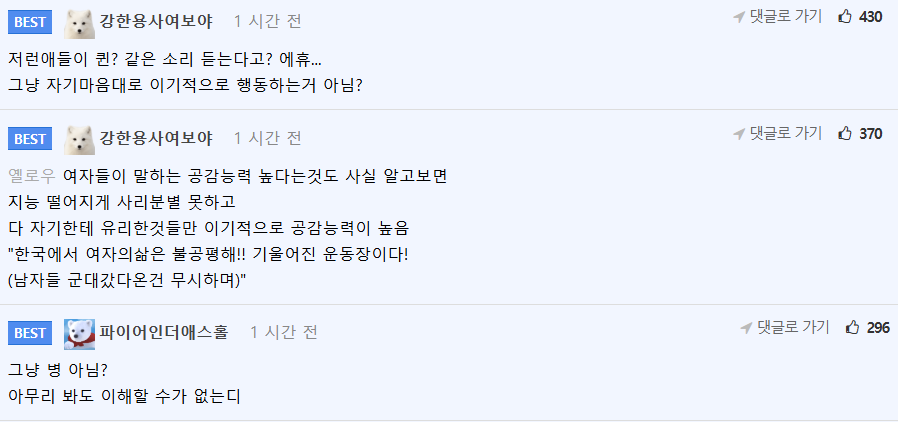

164 · 4 · 14 시간 전 · 원문

수집 당시 댓글 4개
에스페란사 · 1 시간 전
저걸 자랑이라고 떠드나
부릉부릉자동차 · 1 시간 전
아무리 잘만나도 저런 작업이 없는 여자는 없다고 생각함
Left · 1 시간 전
왜 기분나쁜진 모르겠지만
흑우 서윗한남새끼가 눈치보니까
암튼 더 기분나빠졌어 시발 ㅋㅋ
라면 · 42 분 전

저걸 자랑이라고 떠드나